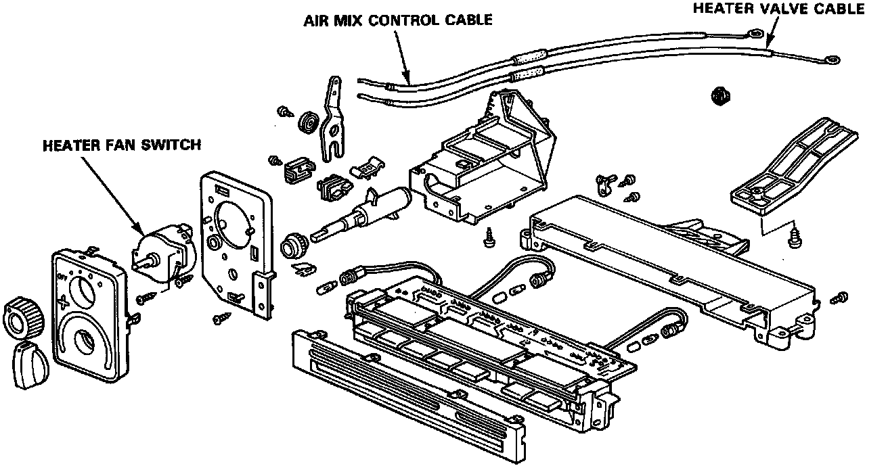
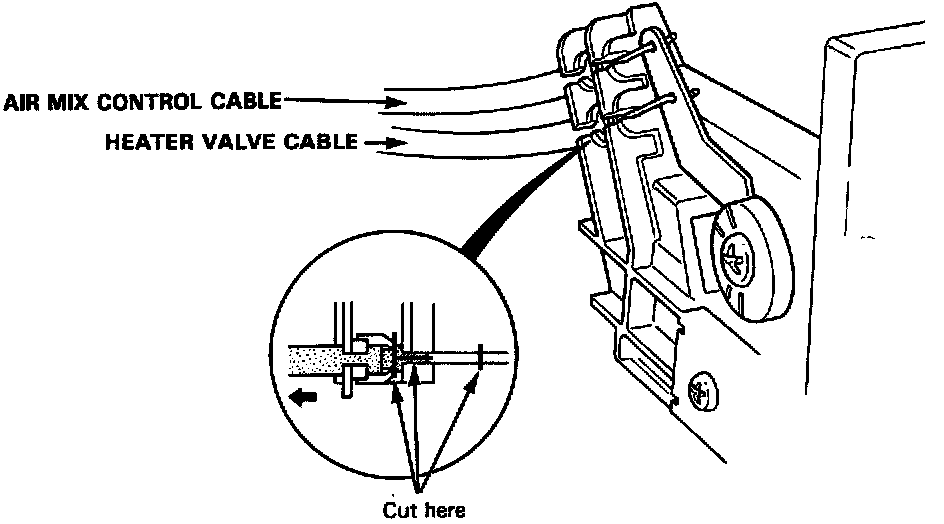

Operation CHARM
: Car repair manuals for everyone.
Home
>>
Acura
>>
1993
>>
Integra L4-1678cc 1.7L DOHC (VTEC) FI
>>
Repair and Diagnosis
>>
Heating and Air Conditioning
>>
Control Assembly
>>
Service and Repair
>>
Button Type
>>
Heater Control Overhaul
Heater Control Overhaul
Overhaul


1.
Cut and remove the cable.
2.
Install the new cable.
NOTE: After assembly check that the temperature control knob smoothly the full rotation.